Product & Design System Transformation
When I joined itslearning, the product suffered from fragmented interfaces, inconsistent UX patterns, low accessibility maturity, and frequent conflicts between designers and developers. I took ownership of transforming the entire UX function: raising team maturity, scaling our design system, rebuilding core UX patterns, and re-establishing strong alignment with engineering.
Role
UX Team Lead
Platforms
Web, iOS, Android
Timeframe
2022 – till now
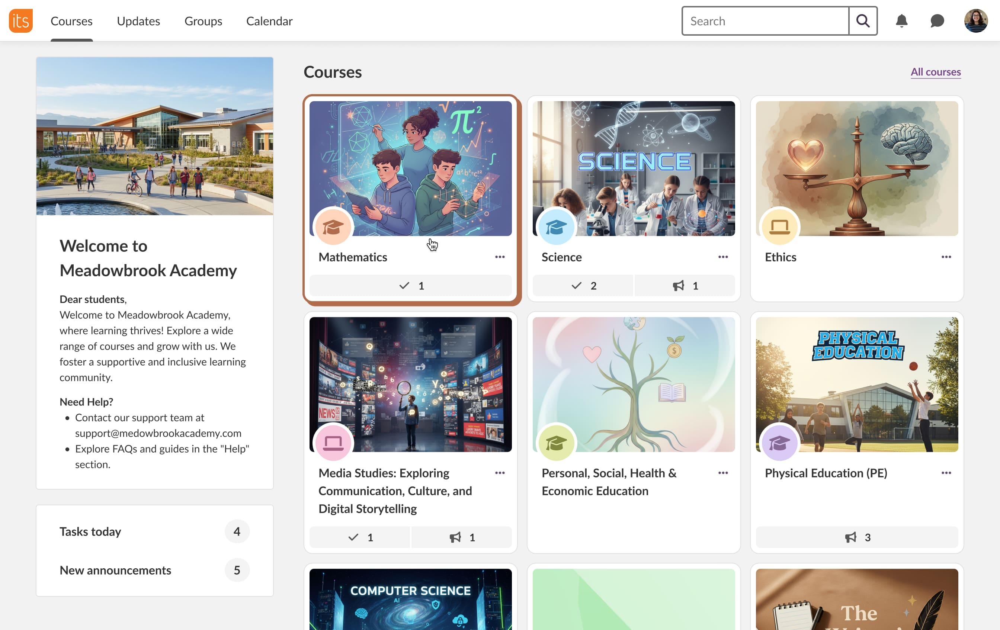
Context & Challenges
itslearning is a large European Learning Management System (LMS) with a 25 year long history that serves millions of teachers and students across K-12, higher and vocational education in 10+ markets.
When I joined, I approached the product with this vision: keep what works, evolve what’s valuable, and remove the legacy and silos slowing it down.
After a quick but thorough assessment, I identified several foundational challenges:
- A design system in place, but ignored by development teams
- No shared design vision across product, UX, and engineering
- UX designers were embedded in dev teams with almost no cross-team communication
- UX and engineering were stuck in a long-running conflict around accessibility decisions
- Native mobile apps for iOS and Android built without any design system principles and connection to the web platform
The team needed structure, a strategy, and a system-first approach to product development.
What I Led and Delivered
Unified Layout Rules
When I joined itslearning, there were no real page templates. Designers reused whatever existed or (often) created new layouts from scratch. Everyone agreed the UI felt inconsistent, but the scope seemed so overwhelming that no one tried to fix it.
A redesign wasn’t realistic (and not needed) — priorities and resources didn’t allow it,— so I took an evolutionary approach. It started with a large-scale analysis of hundreds of existing pages and identifying the common structures.
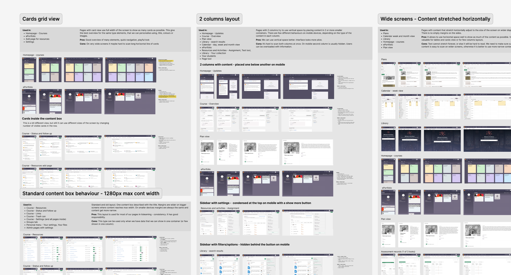
Based on this analysis, I designed a unified layout template that became a foundation for every page. The template defines the content area, flexible paddings, and the main navigation.
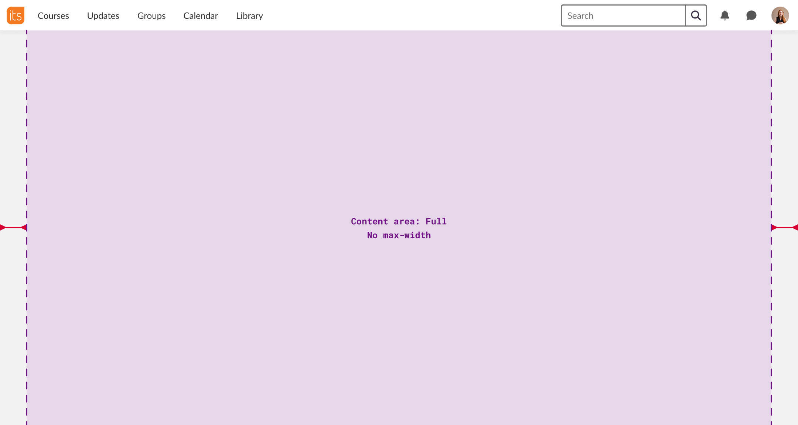
The content area maximum width can be limited, a limitation is chosen by a UX designer depending on the content of a page:
- Narrow for forms and rich text
- Wide for tables and structured data
- Full for cards and large datasets
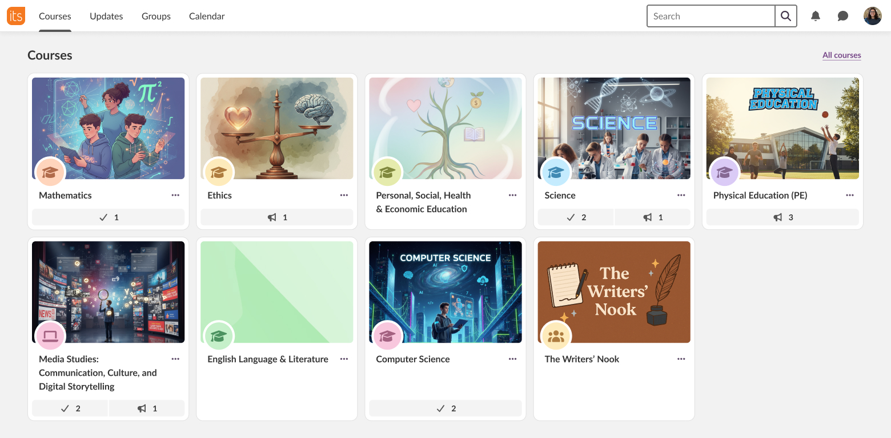
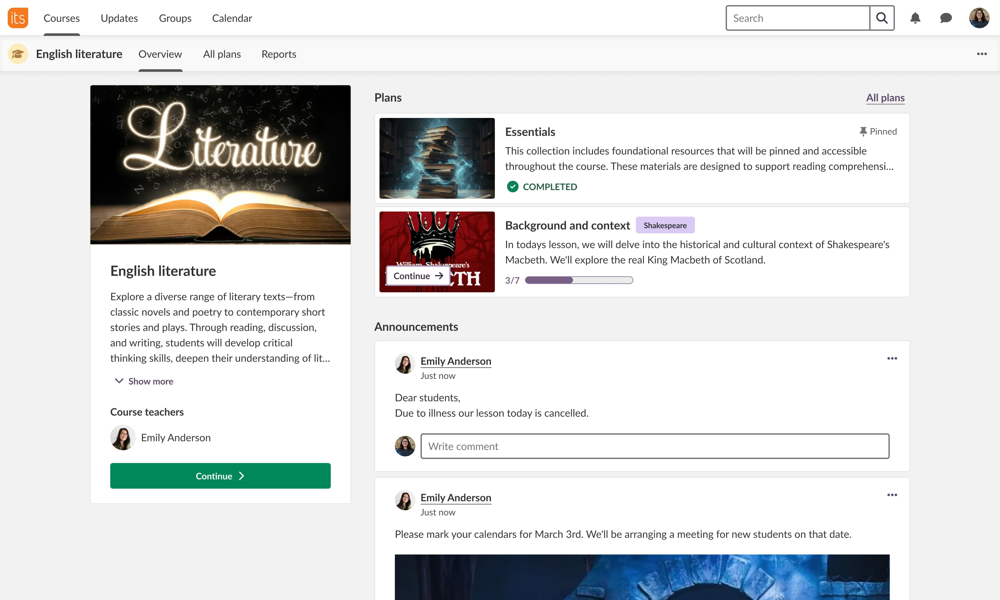
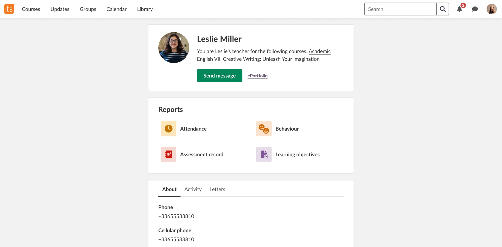
The template is fully responsive and ensures that every new page scales smoothly to tablets and mobile.
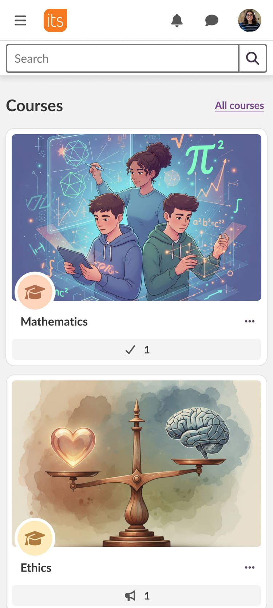
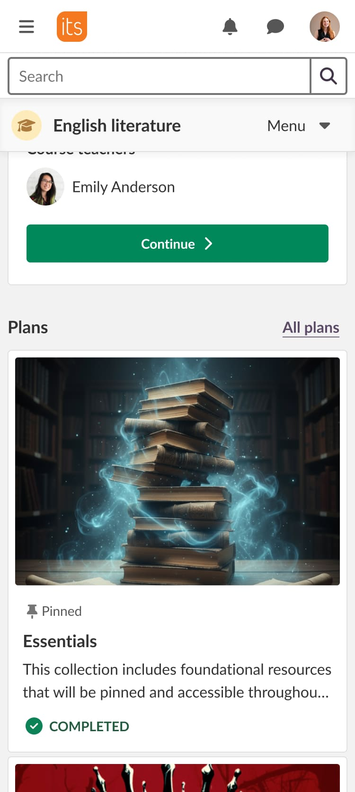
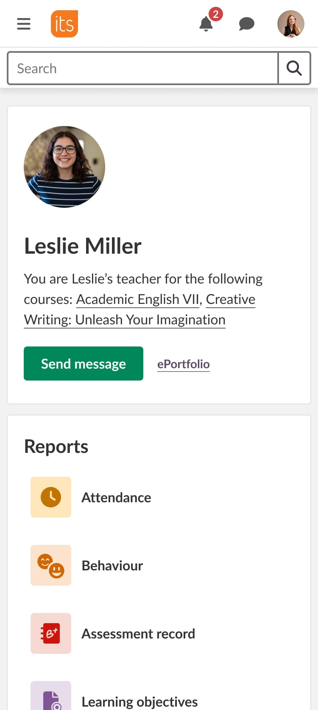
On top of this layout, we built a set of page templates grounded in the existing interface and current design concepts. I kept the card-based design because it organizes information well and minimizes visual differences between older and newer parts of the product.
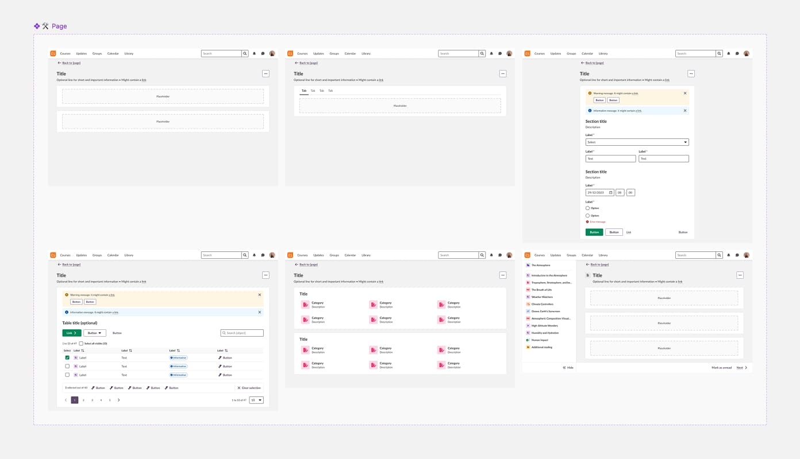
Also the UX team unified and agreed on clear rules for other foundational elements and aligned them with development: Size scale (4px grid) and Typography.
It's so simple to layout the page content now with standard sizes in the designs. Both for spacing, layout etc. So thank you. 🙏 Even though we can't put it everywhere yet, for the new stuff it's a life saver. — Michael Fürstenberg, Frontend Lead & Architect at itslearning
Today, both designers and developers start from a shared template instead of a blank canvas, which dramatically speeds up design and implementation. A common code also allows to evolve the templates over time to make them more flexible and easier to use.
Scaled the Prometheus Design System
I evolved Prometheus into a more scalable, adoptable system by:
- Restructuring the component library
- Discontinuing unnecessary options that didn't add value to the system
- Defining clear usage guidelines
- Encouraging contribution and system thinking in UX designers
- Improving and simplifying component documentation
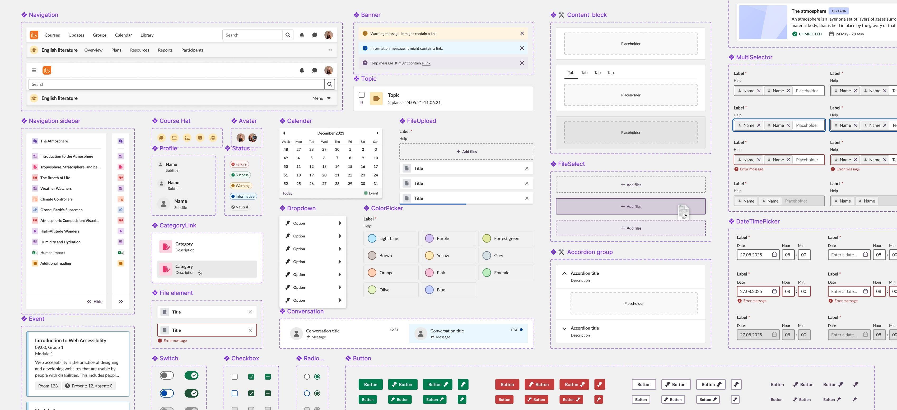
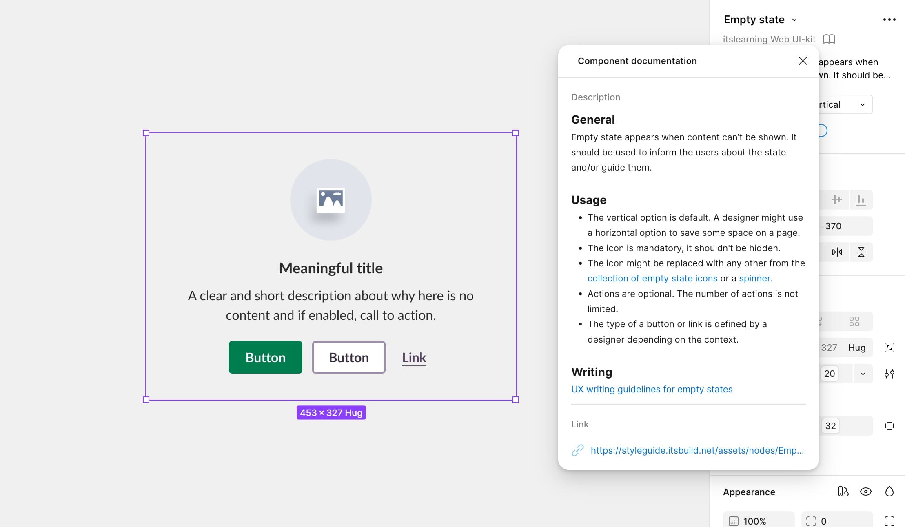
As a result, adoption of the Prometheus design system increased and delivery became faster and more consistent.
Actually, we built this page without writing a single line of CSS.— Alexander Ivanov, a development team lead at itslearning
Revamped Navigation & Information Architecture
When I joined, the main navigation was one of the most problematic areas in itslearning. Several accessibility audits and an official complaint in one of the market showed that the main menu was nearly impossible to use with a keyboard, complex and not understandable. School admins could also add endless custom items to the menu, sometimes up to 20, and there were not reachable.
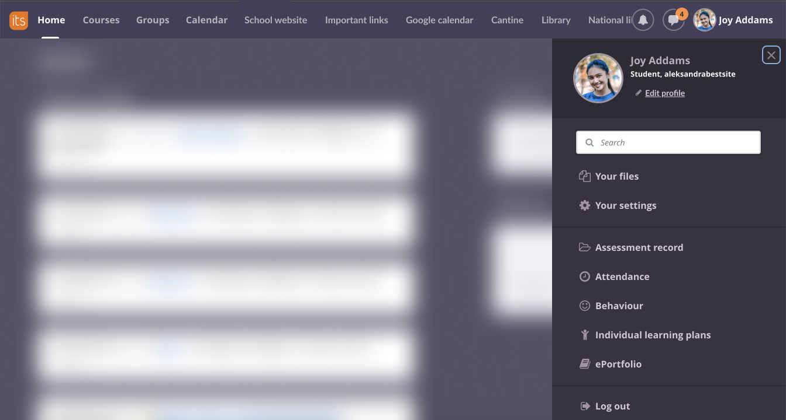
I rebuilt the top-level information architecture and grouped all custom items into two clear sections: Links and Apps. This gave itslearning control over the core navigation again while keeping client flexibility intact.
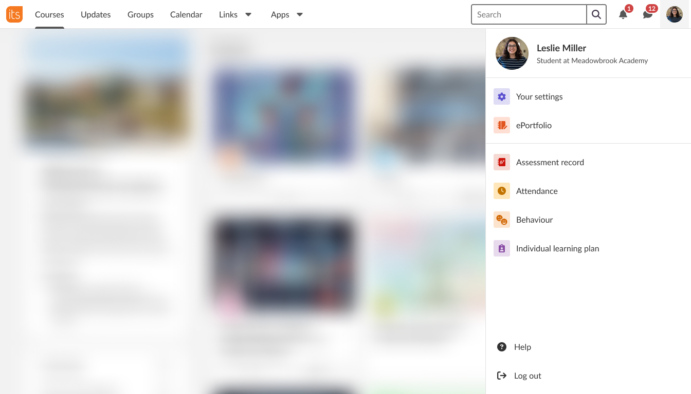
To make this possible, I led cross-functional discussions, presented concepts and user insights, and helped stakeholders feel confident removing outdated and inaccessible features. I also modernised the visual design replacing the old purple background with a clean, neutral palette that supports accessibility and future branding.
Since launch, we haven’t received a single complaint. Instead, users describe the new navigation as cleaner, more modern, and much easier to use.
Simplified Color System & Introduced Guidelines
The original color palette had no structure or usage rules: dozens of similar purple shades, green used both as semantic and accent, and designers choosing colors visually with no clear logic.
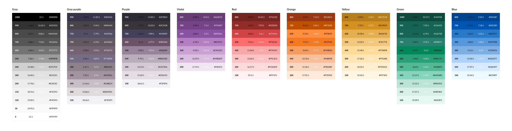
I reorganized the entire system without changing the external UI, reducing the palette from 9 to 7 sections and from 83 to 56 tokens (a 32.5% reduction), giving each color a defined role. I also introduced straightforward rules: grays as the base, chromatic colors only when meaningful, and semantic colors support specific meaning.
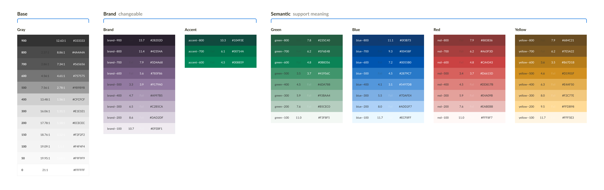
As part of this effort, the UX team mapped over 300 custom colors that had accumulated in the product. Developers replaced them with proper tokens via a script, and despite initial concerns, only a handful of visual issues appeared — all fixed quickly.
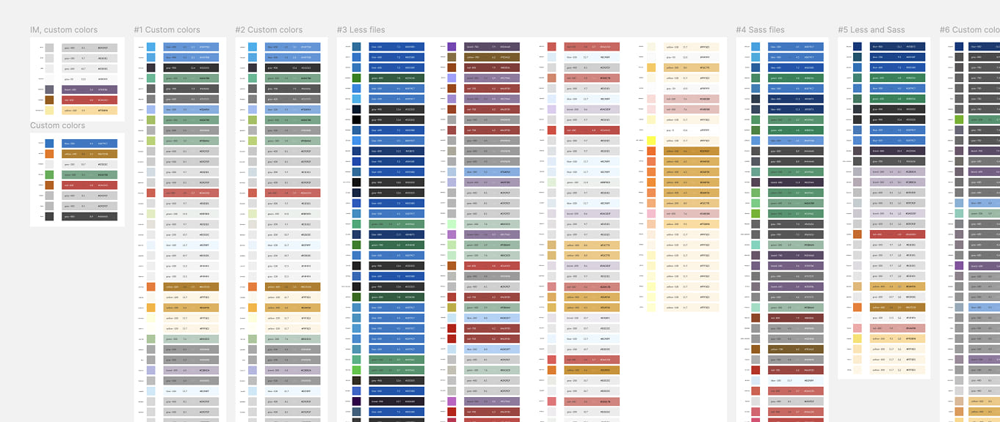
This system has been in place for about two years now. Not a single new color has been added to this palette, and questions about color usage have essentially disappeared, proving the clarity and sustainability of the new structure.
Overhauled Icon System
When I joined, itslearning used more than ten different icon sets — vector, raster, color, monochrome, pulled from multiple libraries over the years. For many actions, like “edit,” there were ten different pencils across the product.
To bring clarity, I split the entire iconography into two categories: System and Brand.
System icons represent the core UI metaphors (edit, add, delete). I aligned the team on one rule: one library, one style. We moved to a single version of Font Awesome, defined strict usage rules, and replaced the legacy icons step by step. I created the templates myself and updated a significant portion of the icons during the transition.
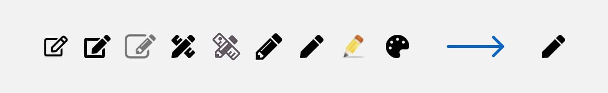
Brand icons illustrate concepts unique to the LMS (course, assignment, quiz). They were inconsistent, mostly raster, and unmaintainable. Raster icons had no source files left, so fixing or updating them was impossible.
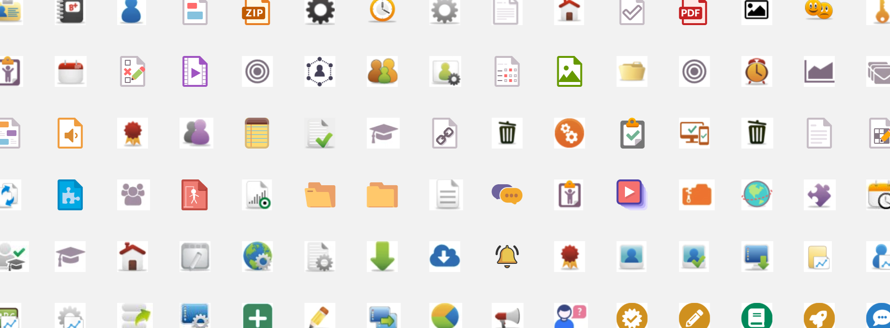
I introduced clear creation principles and a shared template so any designer could produce a new brand icon. Many were redrawn from scratch, with Font Awesome used as a base where possible.
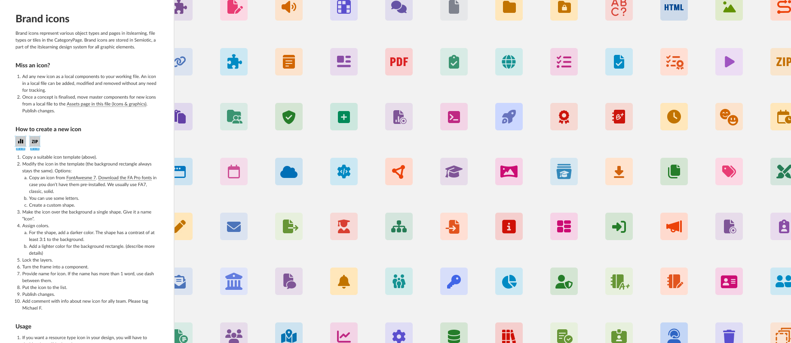
Today, both icon sets are used consistently across web and mobile.
It was a massive effort across the whole UX team, but the system we built is now easy to scale, easy to maintain, and finally predictable.
Grew Accessibility Maturity
When I joined, designers and developers were in a state of constant disagreement. I took multiple steps to change attitude in the UX team and improve communication with the accessibility front-end team:
- Taught designers to read and interpret WCAG and Understanding documents
- Built individual learning plans
- Aligned developers and designers on decision-making
- Prepared design solutions for issues from external accessibility audits, which significantly improved the overall level accessibility
- Introduced a Accessibility Annotation Kit, now used by 40+ designers in Sanoma Learning
- Co-founded the Accessibility Champions Group in Sanoma Learning.
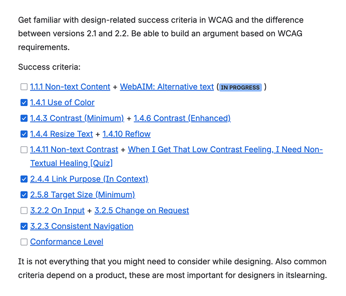
The team learned to speak the same language, and accessibility issues decreased significantly.
Brought Structure to Mobile App
Before I joined, the native mobile app was built without UX consistency or system principles. I led the following steps to build a system to scale the mobile app and align it with the web app:
- Brought mobile design under the umbrella of our design system
- Unified interaction patterns
- Aligned the visual language
- Introduced a shared UX logic and look & feel between web and mobile
This was the first step toward cross-platform parity and a cohesive experience.
Below are some concepts for the mobile app I personally worked on. Another designer from my team is dedicated to this area, when my role is to support and guide the overall UX strategy.
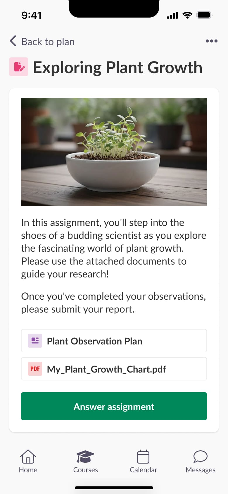
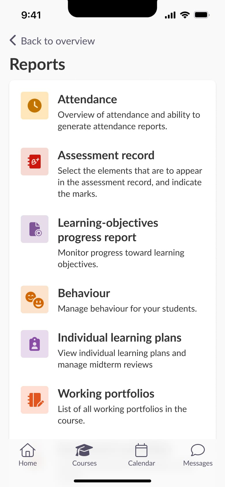
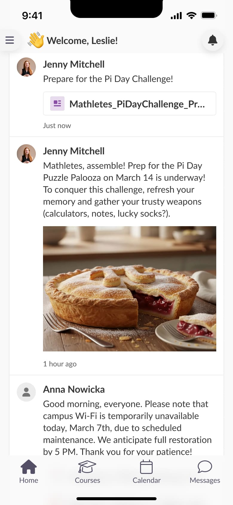
Team Growth & Leadership
Back then, the UX team consisted of two designers and a UX writer. Over the next three years, I grew it to 5 designers, a UX writer, and an Accessibility Expert.
I built a collaborative design culture from scratch, shifting the team from isolated contributors to a unified group building a system together.
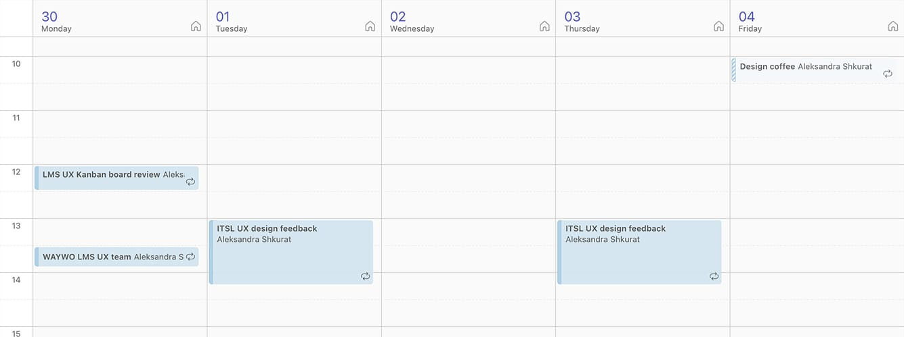
Some other team-related achievements:
- Ensured that every designer contributed to the Prometheus design system
- Moved the team from Sketch to Figma by mid-2023
- Encouraged designers to collaborate on projects and practice mentorship in the team
- Hired and onboarded 4 UX designers
- Led the recruitment of an Accessibility Expert
You are one of the best design leaders I ever worked with. And some of them had two or three times more years of experience than you have now. You are so talented, both in design and in leadership— Matylda Rohleder, UX designer
Impact
Product
- Faster development due to predictable patterns
- Increased the design system adoption
- Improved product accessibility
- Consistent cross-platform experience
UX Team
- Scaled the team from 3 → 7 specialists
- Designers grew significantly in maturity and confidence
- Stronger collaboration and mentorship culture
System Foundations
- Introduced layout & page templates
- Replaced 300+ colors with 56 structured tokens
- Unified disparate icon sets into one predictable icon system
- Reorganized the design system for clarity, scalability
Organization
- UX–engineering collaboration strengthened, especially around accessibility
- Accessibility tools adopted across Sanoma Learning (40+ designers)
- Structured how UX and UX Research work together
Aleksandra combines a rare level of professionalism with a deep commitment to accessibility and product quality. Aleksandra always ensures her team is moving in a clear, unified direction, and her approach to organizing work is truly impressive. — Marcin Klimaszewski, Head of UX at Sanoma Learning
Learnings & Reflection
- System thinking is essential for complex products
- Consistency is not a goal, but a tool for scalability
- Accessibility requires education, not enforcement
- Templates and constraints empower creativity rather than limit it
- Designers thrive in a friendly and supportive UX team